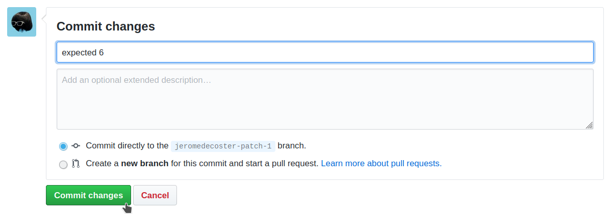

Github Flow + Codesuite pipeline + Slack
Push / Pull Request.
Install and setup the project
Get the code from this github repository :
# download the code
$ git clone \
--depth 1 \
https://github.com/jeromedecoster/aws-github-flow-codesuite-pipeline-slack.git \
/tmp/aws
# cd
$ cd /tmp/aws
Setup Github
We need to create a github token with repo and admin:repo_hook selected :
We receive our Github token :

Get the source code of the Node project.
Fork or clone it then use your repository URL.
Setup Slack
Now we can go to Slack and :
- Create an account if it’s not already done.
- Create a workpace.
- Then create a channel.
I create the channel another-channel :
Now we add an application :
We select the Incoming Webhooks application :
We add it to the channel we just created :
We receive the webhook URL :
Exploring the project
Let’s look at some parts of the source code.
If we look the Makefile, we have some actions to build and use the project :
init: # terraform init + create terraform.tfvars
bin/init.sh
validate: # terraform format then validate
terraform fmt -recursive
terraform validate
apply: # terraform plan then apply with auto approve
bin/apply.sh
Let’s start :
# terraform init + create terraform.tfvars
$ make init
Now we need to define the variables in the terraform.tfvars file :
github_token = ""
github_owner = ""
github_repository_name = ""
slack_path = ""
This is mine. Use your values :
github_token = "2...2"
github_owner = "jeromedecoster"
github_repository_name = "note-github-flow-codesuite-pipeline-node-project"
slack_path = "/services/TU...ant"
The project use two terraform modules, named notification and pipeline.
The Slack notification done from CodeBuild and CodePipeline is created by using SNS and Lambda.
The sns.tf file is used to :
- Create an SNS topic with aws_sns_topic and aws_sns_topic_subscription.
resource aws_sns_topic topic {
name = var.project_name
}
# ...
resource aws_sns_topic_subscription topic_subscription {
topic_arn = aws_sns_topic.topic.arn
protocol = "lambda"
endpoint = aws_lambda_function.lambda.arn
}
The lambda.tf and index.js files are used to :
- Create the Lambda function with aws_lambda_function.
exports.handler = (event) => {
let sns = JSON.parse(event.Records[0].Sns.Message)
// codepipeline notification
let time = sns.time.replace('T', ' ').replace('Z', '')
let username = `CodePipeline - ${time}`
let region = sns.region
let pipeline = sns.detail.pipeline
let link = `https://${region}.console.aws.amazon.com/codesuite/codepipeline/pipelines/${pipeline}/view`
let text = `status: *${sns.detail.state}* ${link}`
// simplest message
let data = data = JSON.stringify({
username: username,
text: text,
icon_emoji: icon_emoji
})
let options = {
hostname: 'hooks.slack.com',
port: 443,
path: process.env.SLACK_PATH,
method: 'POST',
}
let req = https.request(options, (res) => {
console.log('status code : ' + res.statusCode)
res.setEncoding('utf8')
res.on('data', (d) => {
console.log(d)
})
})
// ...
}
Within the pipeline module, the codebuild.tf file is used to :
- Create the CodeBuild project with aws_codebuild_project, aws_codebuild_webhook and aws_codestarnotifications_notification_rule.
resource aws_codebuild_project codebuild {
name = "${var.project_name}-codebuild"
service_role = aws_iam_role.codebuild_role.arn
build_timeout = 120
source {
type = "GITHUB"
location = "https://github.com/${var.github_owner}/${var.github_repository_name}.git"
git_clone_depth = 1
report_build_status = true
}
artifacts {
type = "NO_ARTIFACTS"
}
environment {
compute_type = "BUILD_GENERAL1_SMALL"
# https://github.com/aws/aws-codebuild-docker-images/blob/master/al2/x86_64/standard/3.0/Dockerfile
image = "aws/codebuild/amazonlinux2-x86_64-standard:3.0"
type = "LINUX_CONTAINER"
}
}
resource aws_codebuild_webhook webhook {
project_name = aws_codebuild_project.codebuild.name
filter_group {
filter {
type = "EVENT"
pattern = "PUSH"
}
filter {
type = "HEAD_REF"
pattern = "master"
}
}
filter_group {
filter {
type = "EVENT"
pattern = "PULL_REQUEST_CREATED,PULL_REQUEST_UPDATED,PULL_REQUEST_REOPENED"
}
filter {
type = "BASE_REF"
pattern = "master"
}
}
}
# ...
resource aws_codestarnotifications_notification_rule codebuild_notification_rule {
name = "${var.project_name}-codebuild-notification-rule"
resource = aws_codebuild_project.codebuild.arn
detail_type = "FULL"
# https://docs.aws.amazon.com/codestar-notifications/latest/userguide/concepts.html#concepts-api
event_type_ids = [
"codebuild-project-build-state-failed",
"codebuild-project-build-state-succeeded"
]
target {
address = var.sns_topic_arn
}
}
The codepipeline.tf file is used to :
- Create the pipeline with aws_codepipeline and aws_codestarnotifications_notification_rule
resource aws_codepipeline codepipeline {
name = var.project_name
role_arn = aws_iam_role.codepipeline_role.arn
artifact_store {
location = aws_s3_bucket.artifacts.bucket
type = "S3"
}
stage {
name = "Source"
action {
name = "Source"
category = "Source"
owner = "ThirdParty"
provider = "GitHub"
version = "1"
output_artifacts = ["source"]
configuration = {
OAuthToken = var.github_token
Owner = var.github_owner
Repo = var.github_repository_name
Branch = "master"
}
}
}
stage {
name = "Test"
action {
name = "Test"
category = "Test"
owner = "AWS"
provider = "CodeBuild"
version = "1"
configuration = {
ProjectName = aws_codebuild_project.codebuild.name
}
input_artifacts = ["source"]
}
}
}
# ...
resource aws_codestarnotifications_notification_rule codepipeline_notification_rule {
name = "${var.project_name}-notification-rule"
resource = aws_codepipeline.codepipeline.arn
detail_type = "FULL"
# https://docs.aws.amazon.com/codestar-notifications/latest/userguide/concepts.html#concepts-api
event_type_ids = [
"codepipeline-pipeline-pipeline-execution-started",
"codepipeline-pipeline-pipeline-execution-failed",
"codepipeline-pipeline-pipeline-execution-succeeded"
]
target {
address = var.sns_topic_arn
}
}
Run the project
Let’s build the infrastructure :
# terraform plan then apply with auto approve
$ make apply
Everything is created quickly.
If we go to CodePipeline, we can see that a pipeline is already in progress :
And our Slack channel confirms the success :
If we go to CodeBuild, we can see the successful build history :
If we click on the Build run link, we can see the build logs :
By going to see the settings of our Node project, we can see the webhook that was created between Github and CodeBuild :
Let’s take a look at the source settings of the CodeBuild project :
We see the Github connection to the repository :
And we see the two created webhooks :
- React when the
PULL_REQUEST_CREATED,PULL_REQUEST_UPDATEDorPULL_REQUEST_REOPENEDevents are fired from theBASE_REF master. - React when the
PUSHevent is fired from theHEAD_REF master.
We defined it in the codebuild.tf file :
resource aws_codebuild_webhook webhook {
project_name = aws_codebuild_project.codebuild.name
filter_group {
filter {
type = "EVENT"
pattern = "PUSH"
}
filter {
type = "HEAD_REF"
pattern = "master"
}
}
filter_group {
filter {
type = "EVENT"
pattern = "PULL_REQUEST_CREATED,PULL_REQUEST_UPDATED,PULL_REQUEST_REOPENED"
}
filter {
type = "BASE_REF"
pattern = "master"
}
}
}
We can read the subtle explanation of HEAD_REF and BASE_REF in the AWS documentation :
-
HEAD_REF: A webhook event triggers a build when the head reference matches the regular expression pattern (for example,refs/heads/branch-nameorrefs/tags/tag-name). For a push event, the reference name is found in the ref property in the webhook payload. For pull requests events, the branch name is found in the ref property of the head object in the webhook payload. -
BASE_REF: A webhook event triggers a build when the base reference matches the regular expression pattern (for example,refs/heads/branch-name). ABASE_REFfilter can be used with pull request events only. The branch name is found in the ref property of the base object in the webhook payload.
Now let’s take a look at the CodeBuild settings. We can see the Notification rule :
Let’s edit this rule :
We can see the subscription settings :
Fulldetails asked.- Only two build state events listened.
We defined it in the codebuild.tf file :
resource aws_codestarnotifications_notification_rule codebuild_notification_rule {
name = "${var.project_name}-codebuild-notification-rule"
resource = aws_codebuild_project.codebuild.arn
detail_type = "FULL"
# https://docs.aws.amazon.com/codestar-notifications/latest/userguide/concepts.html#concepts-api
event_type_ids = [
"codebuild-project-build-state-failed",
"codebuild-project-build-state-succeeded"
]
target {
address = var.sns_topic_arn
}
}
Github flow : open a Pull Request
To test the github flow we will directly edit our git files and branches on github.
Let’s edit the app.test.js file :
We add an error :
We commit this change by creating a new branch :
The github interface now offers us to create a Pull Request :
But, what is a Pull Request ? A great answer on Quora :
A pull/merge request is submitted when you’ve worked on some code from a particular branch and want to inform the others of the changes you’ve made. A person/people can be assigned to review and subsequently approve the request before your changes can be incorporated into the branch. Do note that it is referred to as a
pull requeston GitHub and Bitbucket, but other platforms like GitLab and Gitorious have opted to call it amerge request.
Let’s edit again the app.test.js file to commit another error :
The commit message :
After a few seconds, the Pull Request page indicates that a test is in progress on this new commit :
- CodeBuild is currently running these buildspec.yml steps.
Then we finally get, logically, an error :
The CodeBuild history confirm the failed process :
We also received a Slack notification :
Github flow : merge a Pull Request
We will now correct our error so that we can successfully close our pull request.
Let’s edit the app.test.js file again :

We commit the corrected version :

The CodeBuild history confirm the new running process :
We receive a successfull Slack notification :
Our Pull Request page is now fully filled with green color. We can click the merge button with confidence :
We confirm the merge :
The merge is done, we can delete the patch branch :
We can see that the master branch has received the modifications :
The modifications were made on the master branch. So it is CodePipeline that will be triggered.
The pipeline is successfully completed :
And we receive the Slack notification :